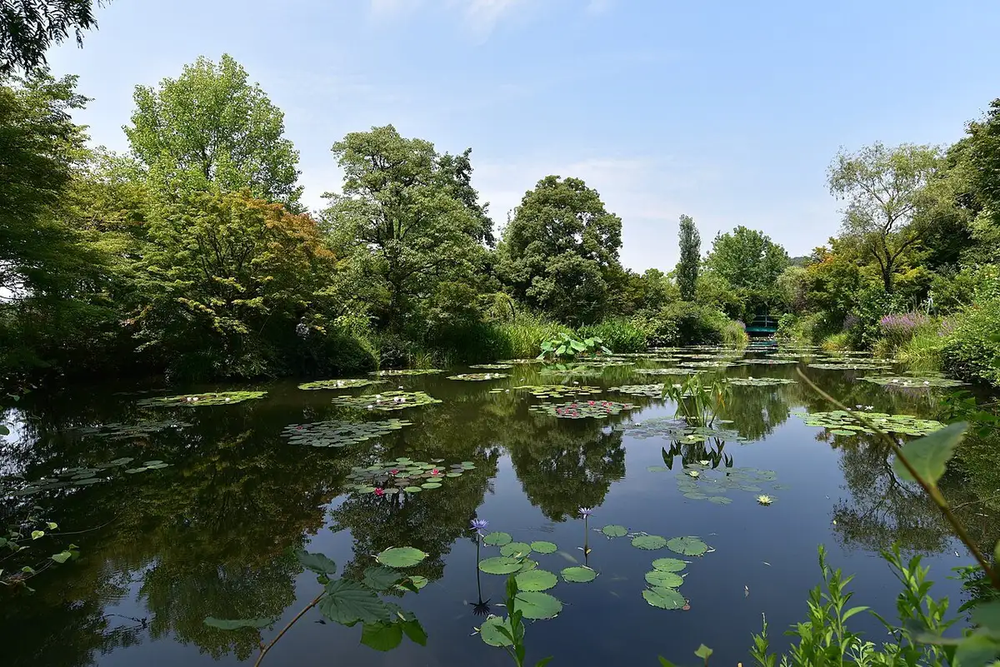
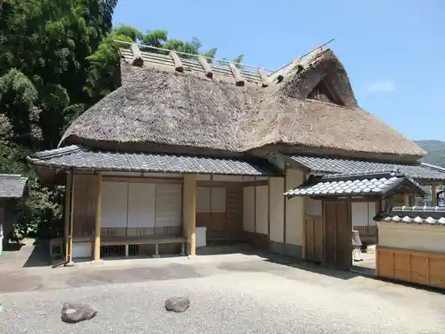

Kitagawa
Kitagawa · Kochi
Kitagawa
Highlighted on the Kochi map.

Stay
Kitagawa Onsen Yuzu no Yado
Dining
Resutoran Mone no Ie
Shintaro Shokudo
Igosso Ramen Tencho
Yuzu no Yado Resutoran
Onsen
Kitagawa Onsen Yuzu no Yado Public Bath
Experience
Mone no Niwa Sansaku
Sights
Kitagawa Mone no Niwa Marumottan
Nakaoka Shintaro Kan
Nakaoka Shintaro Seika

Kitagawa Town Hall
Yanase Dam
Horiganama Hashi
Nakaoka Shintaro Zo